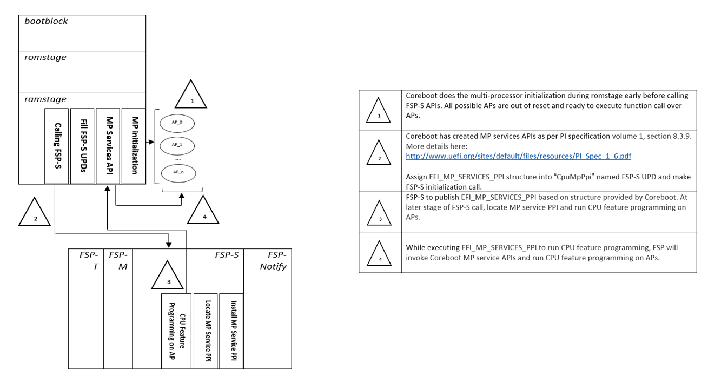

Intel Common Code Block Publishing EFI_MP_SERVICES_PPI
Introduction
This documentation is intended to document the purpose for creating EFI service Interface inside coreboot space to perform CPU feature programming on Application Processors for Intel 9th Gen (Cannon Lake) and beyond CPUs.
Today coreboot is capable enough to handle multi-processor initialization on IA platforms.
The multi-processor initialization code has to take care of lots of duties:
Bringing all cores out of reset
Load latest microcode on all cores
Sync latest MTRR snapshot between BSP and APs
Perform sets of CPU feature programming
CPU Power & Thermal Management
Overclocking
Intel Trusted Execution Technology
Intel Software Guard Extensions
Intel Processor Trace etc.
This above CPU feature programming lists are expected to grow with current and future CPU complexity and there might be some cases where certain feature programming mightbe closed source in nature.
Platform code might need to compromise on those closed source nature of CPU programming if we don’t plan to provide an alternate interface which can be used by coreboot to get-rid of such close source CPU programming.
Proposal
As coreboot is doing CPU multi-processor initialization for IA platform before FSP-S initialization and having all possible information about cores in terms of maximum number of cores, APIC ids, stack size etc. It’s also possible for coreboot to extend its own support model and create a sets of APIs which later can be used by FSP to run CPU feature programming using coreboot published APIs.
Due to the fact that FSP is using EFI infrastructure and need to relying on install/locate PPI to perform certain API call, hence coreboot has to created MP services APIs known as EFI_MP_SERVICES_PPI as per PI specification volume 1, section 8.3.9. More details here: PI_Spec_1_6
coreboot to publish EFI_MP_SERVICES_PPI APIs
API |
Description |
|---|---|
PeiGetNumberOfProcessors |
Get the number of CPU’s. |
PeiGetProcessorInfo |
Get information on a specific CPU. |
PeiStartupAllAPs |
Activate all of the application processors. |
PeiStartupThisAP |
Activate a specific application processor. |
PeiSwitchBSP |
Switch the boot strap processor. |
PeiEnableDisableAP |
Enable or disable an application processor. |
PeiWhoAmI |
Identify the currently executing processor. |
Code Flow
Here is proposed design flow with coreboot has implemented EFI_MP_SERVICES_PPI API and FSP will make use of the same to perform some CPU feature programming.
coreboot-FSP MP init flow

Benefits
coreboot was using SkipMpInit=1 which will skip entire FSP CPU feature programming. With proposed model, coreboot will make use of SkipMpInit=0 which will allow to run all Silicon recommended CPU programming.
CPU feature programming inside FSP will be more transparent than before as it’s using coreboot interfaces to execute those programming.
coreboot will have more control over running those feature programming as API optimization handled by coreboot.